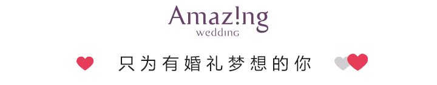
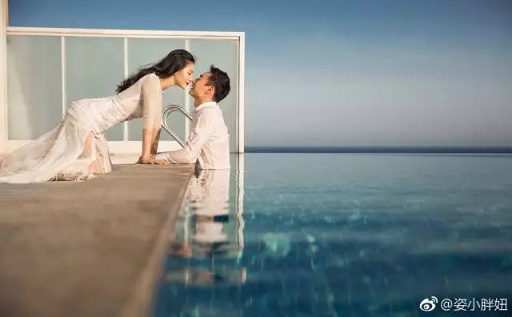
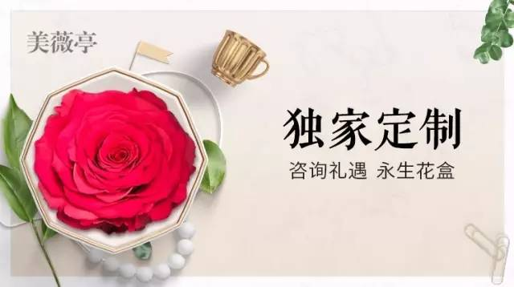
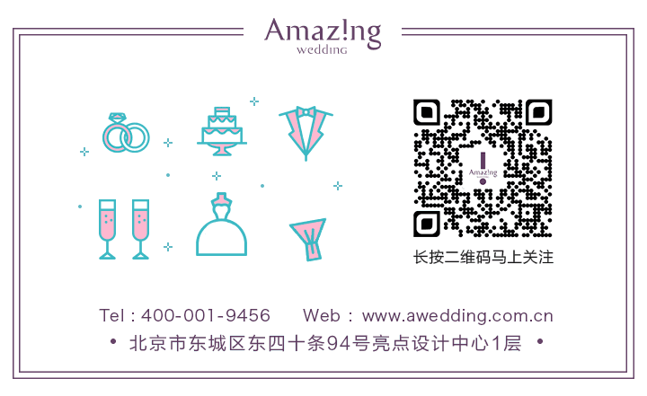
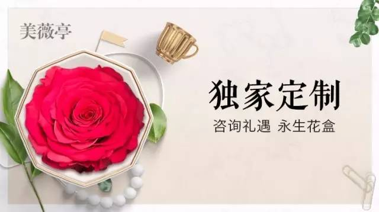
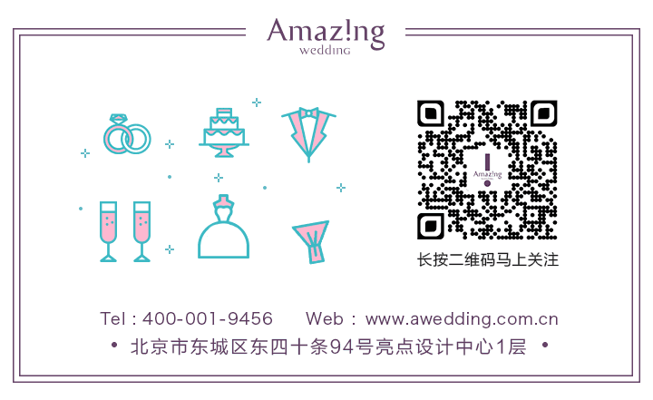

国民奥运冠军CP秦凯&何姿西安大婚，我们准备好了！
 去年夏天感动了无数人的奥运冠军CP秦凯&何姿， 最近分享了他们新鲜出炉的婚纱照 ，何姿更是直接在微博中爱的表白秦凯 “少不了水 也少不了你” 。除了在泳池水中拍摄的这组婚纱照外，同时还曝光了另外四组造型， 婚纱照的曝光更是让大家好奇猜测两人是不是婚礼将近。
美姐悄悄地告诉大家，他们婚礼的筹备确实已进入倒计时阶段。 最近，这对超级有爱的奥运冠军CP常常出现在美薇亭， 为大婚做最后的准备。
距离里约奥运会过去已经近一年， 但这张秦凯在赛场上单膝跪地向何姿求婚的照片， 不知甜到多少世界观众。 秦凯的微博置顶内容也一直停留在了向何姿甜蜜的告白：“ 不止为冠军，赢了你，输了全世界又如何！ ”
当时秦凯求婚的戒指，是秦凯拜托田亮从国内专门带到里约的。 队里的一些人、部分奥运会的工作人员是知道这个秘密的， 所以才有了颁奖后工作人员把金牌、铜牌得主拉走的这一幕。 当时何姿一脸懵圈，不知道秦凯上来干啥，也不知道为啥工务人员不拦他。
左边金铜牌得主施廷懋和卡诺托互相搭着肩 右边何姿和秦凯相拥而泣。特别温暖的一张照片。
2012伦敦奥运，秦凯最后一跳被俄罗斯选手反超， 他在跳水池边伤心落泪。这时候何姿走过来， 在秦凯难过的时刻，拥抱了哭泣的他， 正是这温情拥抱让他们的恋情走入大家的视野。 因此四年之后2016里约奥运颁奖仪式上的这场求婚， 也是想在最难忘的时刻表达自己的决心与真心。
里约归来，两人除了在筹备婚礼，还有很多时候是在相伴旅行。 现实生活中的秦凯除了是宠妻狂魔，还是一位被跳水“耽误”的摄影家， 在世界各地，他镜头中的何姿美丽动人，留下了无数美片， 简直就是在完美示范如何把恋人拍成女神。
这样一对在奥运赛场上无比荣耀的世界冠军，
生活中的神仙眷侣，选择由美薇亭来举办他们的婚礼，
我们非常荣幸。
6月5日这一天，婚礼筹备进入尾声，秦凯、
何姿再次来到美薇亭和我们进行婚礼前重要事项确认。
整个筹备期中，我们见证了他们的幸福， 也共同期待6月25日，在秦凯的家乡古城西安， 这对奥运冠军CP的完美婚礼，到时我们再见啦~~
 


